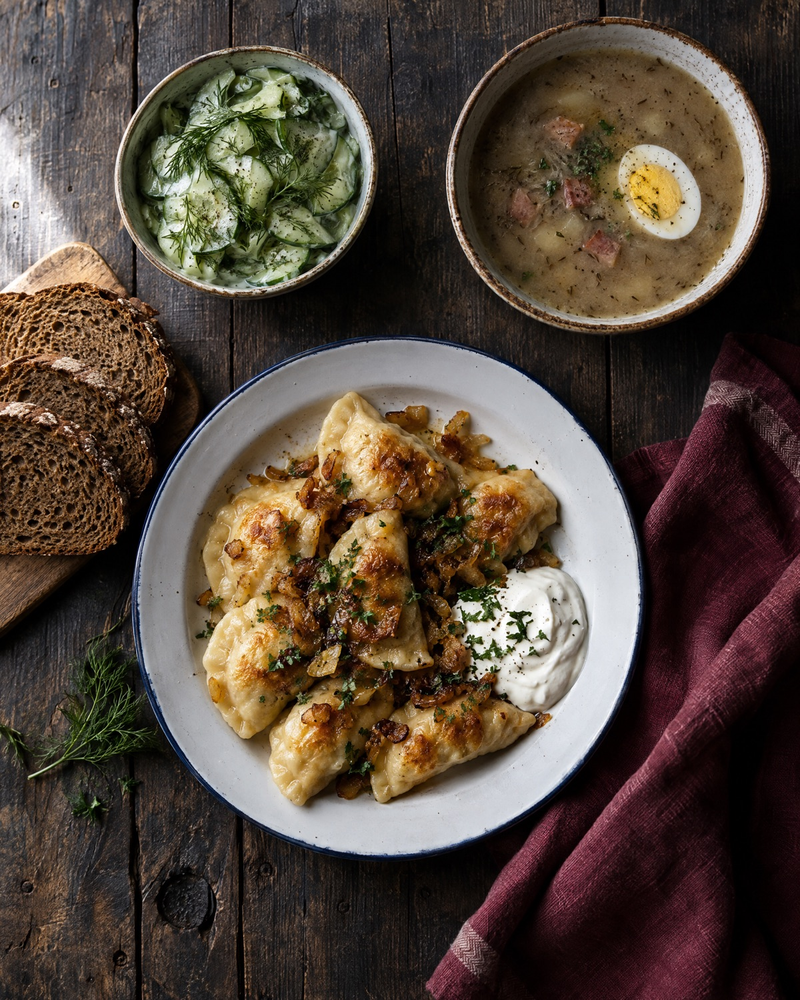

Kuchnia polska · Nowy Sącz
Domowy obiad
przy Jagiellońskiej.
Zupa, drugie danie i coś na słodko — prosto, smacznie i w cenie 20–40 zł za osobę.
O barze
Prosto i smacznie —
bez udawania.
Bar Sądecki to miejsce na zwyczajny, porządny obiad w centrum Nowego Sącza. Polskie jedzenie w domowym wydaniu, życzliwa obsługa, ceny, które nie straszą.
Klimat klasycznego baru — bez modnych dodatków i wykwintnych talerzy. Przychodzi się tu po to, żeby dobrze zjeść. Posiłek zjesz na miejscu albo zabierzesz na wynos.
- 20–40 złza osobę
- 4,4 ★125 opinii Google
- od 9:30otwarcie

Opinie
4,4 w Google
125 opinii. Oto trzy z nich, słowo w słowo.
Pyszne, domowe jedzenie (barszcz z uszkami totalny sztos ❤️)
Smaczne posiłki, duże porcje i przystępne ceny sprawiają, że chce się tu wracać.
Obsługa bardzo miła i grzeczna, chętnie doradzi.
Godziny
od 9:30
Otwieramy o 9:30. Pełne godziny otwarcia w danym dniu potwierdź telefonicznie.
18 443 82 53Dojazd
Jagiellońska 18
33-300 Nowy Sącz
W centrum miasta, przy ulicy Jagiellońskiej.
Wyznacz trasę w Google Maps